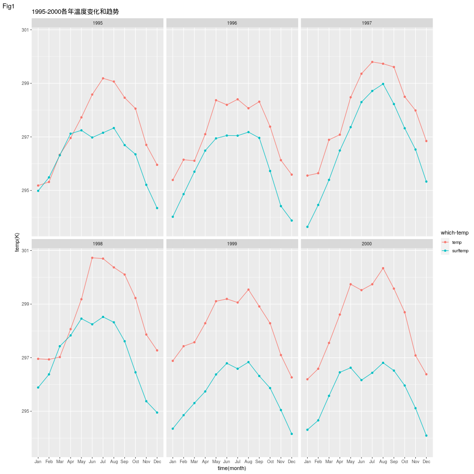
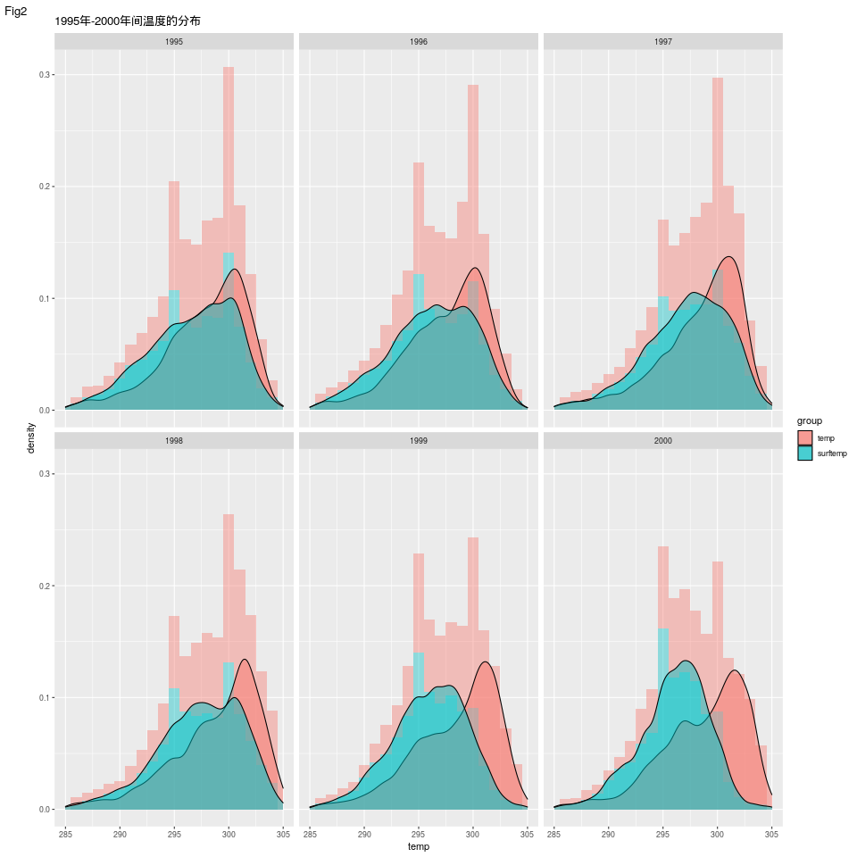
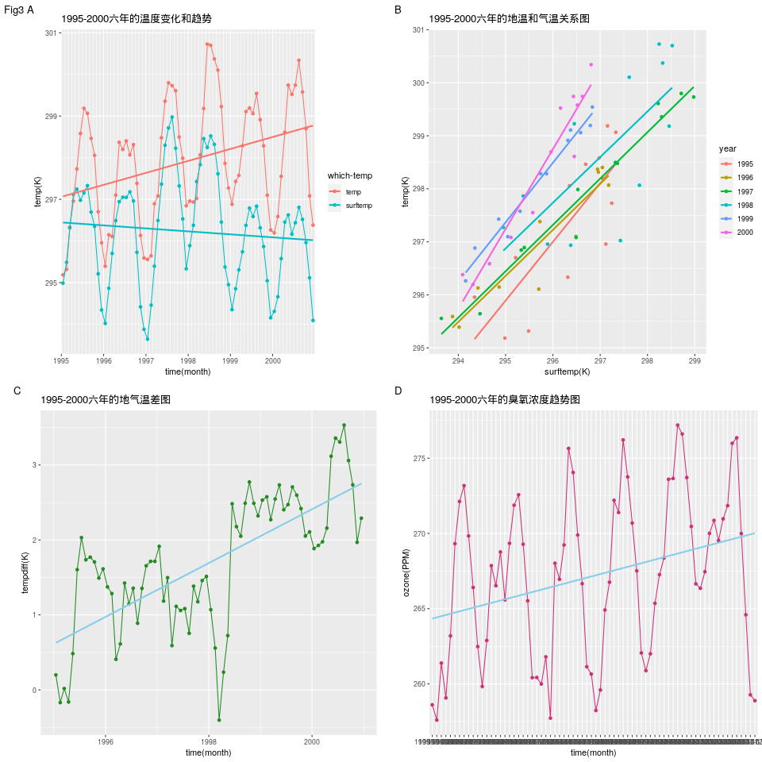
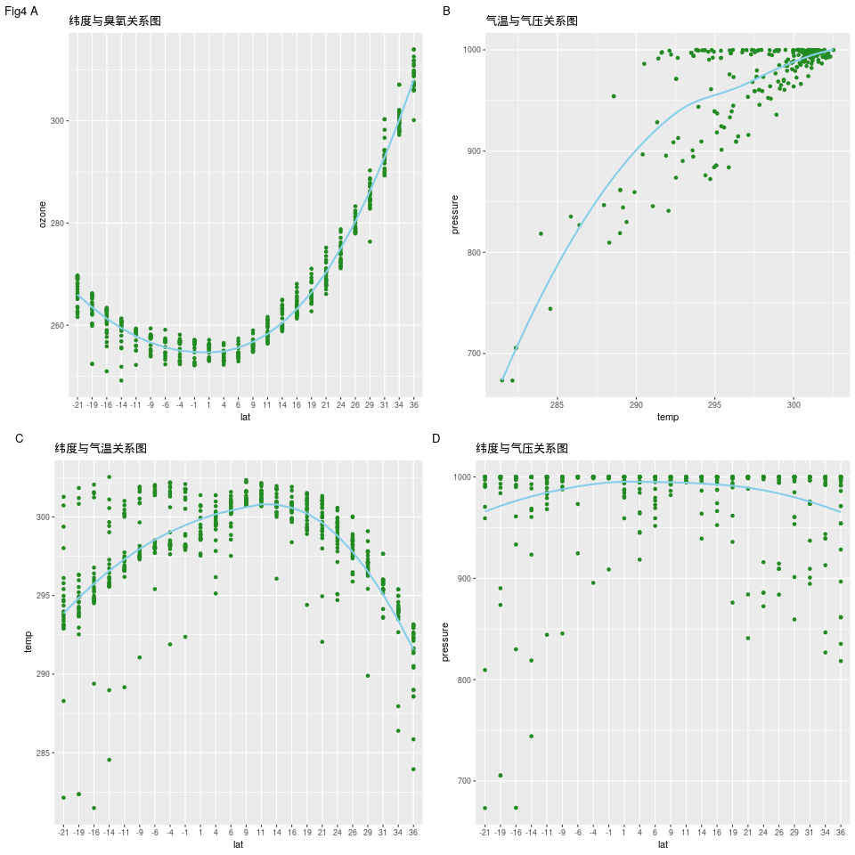
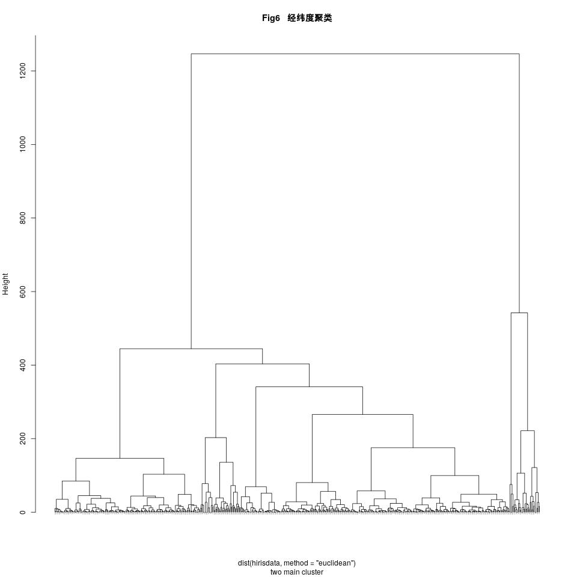
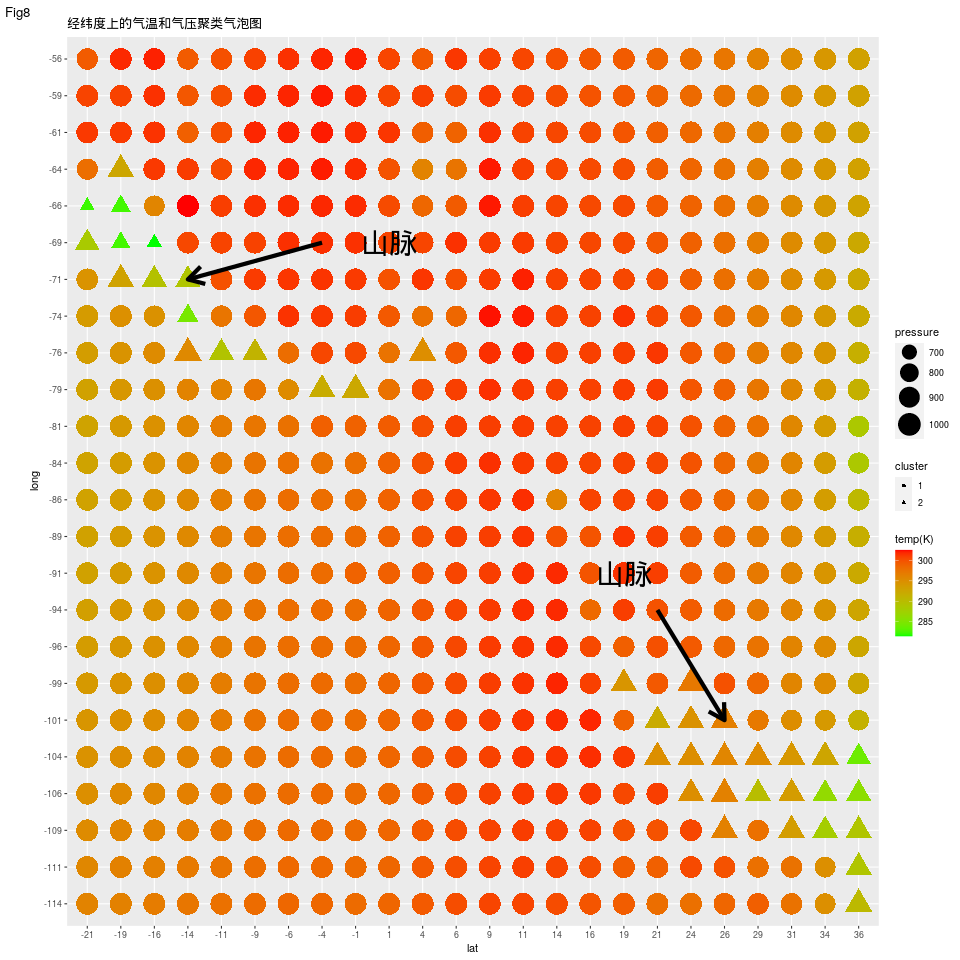
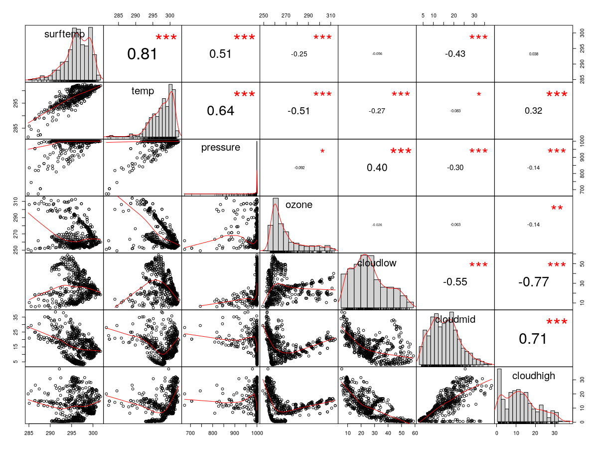

NASA数据的统计分析揭示了数据测量点可能的地形结构
姓名：姜辰 专业：生物信息
摘要：运用气象统计学的原理和方法，分析2006年ASA提供的数据，包括1995年1月至2000年12月在中美洲24x24网格上的每月大气测量值。通过联合多组变量信息，结果表明，该区域地域普遍温度在300K，气温常年高于地温，且地气温差五年中逐步扩大，可能是由于臭氧含量的上升或地表植被增加；臭氧含量和气温随着纬度增大而分别增高和降低，气温存在一定异常值，通过聚类分析得到关于经纬度的数据能分为两大类，将两类观测点和气温与气压结合，预测出两处可能的山脉地形。
关键词：地气温差；臭氧；地形
数据处理：由于测量数据只有年月结构，所以取日期为月中，即15日，将数据中的年月合并，并转化为Date数据，便于之后关于日期整理绘图。提取数据集中的地表温度和气温数据，以年月为索引求平均值，得出各个日期下的测量数据的平均值数据集，并做温度关于日期的趋势图并拟合趋势关系。
结果:
通过整理来自NASA的含有11组变量、41,472行的数据，根据数据测量时间，将数据分为1995年-2000年六年，并将各年的数据按月份求得平均值，做出观测的中美洲地区六年来历月的温度变化(图1)，该地区在6、7、8月的温度为年内最高温度。

通过温度数据出现次数统计计数做出直方图如(图2)，该地区常年出现的最多观测温度为300K，适宜居住。

整合六年间的地表温度数据和气温数据如(图3A)，通过线性拟合后我们能观察到，六年来地表温度有下降的趋势，检查臭氧总量(DU)发现六年中略有上升(图3D)，也可能是因为植被增加了,相反,吸热的面积减少了,导致地表温度有下降的趋势。而气温有上升的趋势，导致地气温差逐年增大(图3B、C)。

为了继续探究温度的变化与何种因素有关，将几个变量同纬度结合(图4),臭氧的总量和气温关于纬度有明显的对称(图4A、C)，臭氧总量在赤道两侧增加，在赤道处最低，虽然在温度与纬度的关系图中也能看出在赤道处温度达到最高，但存在大量的离散点。

为了探究气温和纬度的关系图中为何存在离散点，将气温的数据整合至具体的经纬度坐标点上，并以经度为横坐标，纬度为纵坐标，建立关于臭氧和气温的气泡图，发现在映射到气泡图的经纬度地点中，有部分坐标的气温明显偏离了正常数值，而臭氧的总量却未有异常。

考虑到是否因为地形的因素，数值偏离了正常数值，我们又重新整合了关于同一经纬度坐标点的包含地温、气温、气压、臭氧、云压(high、med、low)数据，并对坐标位点进行了聚类分析(图6)，结果表明，有部分位点与大部分的坐标位点显现出偏离，总体上可以分为两个大类。两大类之间的变量分别做T检验，地温p.value=1.804e-11，气温p.value=8.782e-13，气压p.value=4.447e-16，臭氧p.value=0.01978，云压(low\mid\high)p.value=3.336e-37\1.262e-07\0.0112,均达到显著，其中臭氧的显著性最小。

将两类在经纬度映射的点图中展示出来(图7)，聚类分析出的第二大类就位于气温偏离正常数值的位点，而该类坐标点显现出的气温明显偏低，可以推测是地形因素造成。

将气温和气压因素作为数据展示在经纬度映射的气泡图中，能看到聚类的第二类坐标点显现出气温、气压的同时偏低，并显现出连续的条带状，推测是山脉地形导致的结果。

最后做了各种参数的相关性检验图，星号表示显著与否，左侧为分布。

参考文献
【1】 姜会飞, 廖树华, 叶尔克江,等. 地面温度与气温关系的统计分析[J]. Chinese Journal of Agrometeorology, 2004, 25(03):1-4.
【2】 阿帕尔, 叶尔克江, 冯俊平. 昌吉市地温与气温关系初探[J]. 沙漠与绿洲气象, 2007(03):57-60.
【3】 吴统文, 郑光, 瞿章,等. 北半球大气臭氧和气温的关系[J]. 高原气象, 1992(02):100-104.
【4】 张金强, 王振会. 臭氧总量的纬度带变化特征分析[J]. 科技信息(学术版), 2007, 000(016):1-2.
R 代码
2551#合成6年的采样时间，并转化为Date格式2library(ggplot2)3nasa<-nasaweather::atmos4nasa$yearmonth<-as.Date(paste(nasa$year,nasa$month,"15",sep="-"))5
6#提取6年的地表温度数据处理7surftemp_mean<-(tapply(nasa$surftemp,nasa$yearmonth,mean))8#or aggregate函数9#surftemp_mean<-aggregate(nasa$surftemp,list(yearmonth=nasa$yearmonth),mean)10surftemp_mean<-as.data.frame(surftemp_mean)11surftemp_mean$surftemp<-surftemp_mean[,1]12surftemp_mean[,1]<-as.Date(row.names(surftemp_mean))13rownames(surftemp_mean)=NULL14colnames(surftemp_mean)<-c("time","temp")15surftemp_mean$group<-factor("surftemp")16surftemp_mean$year<-factor(rep(1995:2000,each=12))17surftemp_mean$month<-factor(rep(month.abb,6),levels = month.abb)18surftemp_mean1<-surftemp_mean #备份19
20#提取6年的温度数据处理21temp_mean<-(tapply(nasa$temp,nasa$yearmonth,mean))22temp_mean<-as.data.frame(temp_mean,row.names = NULL)23temp_mean$surftemp<-temp_mean[,1]24temp_mean[,1]<-as.Date(row.names(temp_mean))25rownames(temp_mean)=NULL26colnames(temp_mean)<-c("time","temp")27temp_mean$group<-factor("temp")28temp_mean$year<-factor(rep(1995:2000,each=12))29temp_mean$month<-factor(rep(month.abb,6),levels = month.abb)30temp_mean1<-temp_mean #备份31
32alltemp_mean<-rbind(temp_mean,surftemp_mean)33str(alltemp_mean)34
35##6年的all温度趋势图36png("alltemptrend.png",width = 960, height = 960)37p<-ggplot(alltemp_mean,aes(x=time,y=temp,group=group,color=group))38p<-p+geom_point()39p<-p+geom_line()40p<-p+stat_smooth(method = "lm",se = FALSE)41p<-p+labs(title="1995-2000六年的温度变化和趋势",x="time(month)",y="temp(K)",color="which-temp")+42 scale_x_date(date_labels = "%Y",date_breaks = "1 year",minor_breaks = "1 month",limits=range(alltemp_mean$time),expand = c(0.007,0))43p44dev.off()45print("alltemptrend_OK")46
47##### Fig1 各年各月平均的all温度封面图48png("Fig1_alltemp.png",width = 960, height = 960)49p<-ggplot(alltemp_mean,aes(x=month,y=temp,group=group,color=group))50p<-p+geom_point()+geom_line()+51 facet_wrap(facets = "year", ncol = 3)52p<-p+labs(title="1995-2000各年温度变化和趋势",x="time(month)",y="temp(K)",color="which-temp",tag = "Fig1")53p54dev.off()55print("alltemp_OK")56
57##### Fig2 1995年-2000年间温度的分布图58png("Fig2tempcounts.png",width = 960, height = 960)59te<-data.frame(nasa$temp)60colnames(te)<-"temp"61te$year<-factor(as.character(nasa$year))62te$group<-factor("temp")63
64ts<-data.frame(nasa$surftemp)65colnames(ts)<-"temp"66ts$year<-factor(as.character(nasa$year))67ts$group<-factor("surftemp")68tt<-rbind(te,ts)69
70p<-ggplot(tt,aes(x=temp,y=..density..,group=group,fill=group))71p<-p+geom_histogram(alpha=.4,binwidth = 1)+72 facet_wrap(facets = "year", ncol = 3)73p<-p+geom_density(alpha=.5)+scale_x_continuous(limits = c(285,305))+74 labs(title = "1995年-2000年间温度的分布",group="which-temp",tag = "Fig2")75p76dev.off()77print("tempcounts_OK")78
79##### Fig3 alltemptrend、tempdiff、ozone、temp_surftemp关系80png("Fig3.png",width = 960, height = 960)81p[[1]]<-ggplot(alltemp_mean,aes(x=time,y=temp,group=group,color=group))+82 geom_point()+geom_line()+stat_smooth(method = "lm",se = FALSE)+83 labs(title="1995-2000六年的温度变化和趋势",tag = "Fig3 A",x="time(month)",y="temp(K)",color="which-temp")+84 scale_x_date(date_labels = "%Y",date_breaks = "1 year",minor_breaks = "1 month",limits=range(alltemp_mean$time),expand = c(0.007,0))85
86p[[2]]<-ggplot(temp_surftemp,aes(x=surftemp,y=temp,group=year,color=year))+87 geom_point()+stat_smooth(method = "lm",se = FALSE)+88 labs(title="1995-2000六年的地温和气温关系图",tag =" B",x="surftemp(K)",y="temp(K)")89
90p[[3]]<-ggplot(temp_surftemp,aes(x=time,y=-tempdiff))+91 geom_point(colour="forestgreen")+geom_line(colour="forestgreen")+92 stat_smooth(method = "lm",se = FALSE,colour="skyblue")+93 labs(title="1995-2000六年的地气温差图",tag =" C",x="time(month)",y="tempdiff(K)")94
95z<-tapply(nasa$ozone,nasa$yearmonth,mean)96z<-as.data.frame(as.table(z))97colnames(z)<-c("yearmonth","ozone")98z$yearmonth<-as.Date(z$yearmonth)99z$group<-"1"100p[[4]]<-ggplot(z,aes(x=yearmonth,y=ozone,group=group))+101 geom_point(color="violetred3")+geom_line(color="violetred3")+102 stat_smooth(method = "lm",se = FALSE,colour="skyblue")+103 labs(title="1995-2000六年的臭氧总量趋势图",tag =" D",x="time(month)",y="ozone(DU)")+104 scale_x_date(date_labels = "%Y",date_breaks = "1 year",minor_breaks = "1 month",expand = c(0.007,0))105grid.arrange(p[[1]],p[[2]],p[[3]],p[[4]],ncol=2,nrow=2)106dev.off()107
108##检查六年来的臭氧情况109png("ozone-time.png",width = 960, height = 960)110a<-nasa[,c("ozone","yearmonth")]111ggplot(a,aes(x=yearmonth,y=ozone))+geom_point()+stat_smooth(method = "lm")+labs(title="1995-2000六年的臭氧变化和趋势",x="time(month)",y="temp(K)")112dev.off()113
114#surftemp和temp的关系115surftemp_mean1<-surftemp_mean116colnames(surftemp_mean1)[2]<-"surftemp"117temp_mean1<-temp_mean118temp_mean1[3]<-NULL119surftemp_mean1[3]<-NULL120temp_surftemp<-merge(surftemp_mean1,temp_mean1)121temp_surftemp$tempdiff<-with(temp_surftemp,(surftemp-temp)) 122# or use transform123# temp_surftemp<-transform(temp_surftemp,tempdiff=surftemp-temp)124
125##surftemp-temp图126png("surftemp-temp.png",width = 960, height = 960)127p<-ggplot(temp_surftemp,aes(x=surftemp,y=temp,group=year,color=year))128p<-p+geom_point()129p<-p+stat_smooth(method = "lm",se = FALSE)+130 labs(title="1995-2000六年的地温和气温关系图",x="surftemp(K)",y="temp(K)")131p132dev.off()133print("surftemp-temp_OK")134
135##地气温差图136png("tempdiff.png",width = 960, height = 960)137p<-ggplot(temp_surftemp,aes(x=time,y=tempdiff))138p<-p+geom_point(colour="forestgreen")139p<-p+geom_line(colour="forestgreen")140p<-p+stat_smooth(method = "lm",se = FALSE,colour="skyblue")+141 labs(title="1995-2000六年的地气温差图",x="time(month)",y="tempdiff(K)")142p143dev.off()144print("tempdiff_OK")145
146##经纬度与温度147a<-tapply(nasa$temp, nasa[,1:2], mean)148t<-as.data.frame(as.table(a))149colnames(t)[3]<-"temp"150t$lat<-factor(round(as.numeric(as.character(t$lat))))151t$long<-factor(round(as.numeric(as.character(t$long))))152
153##### Fig5 经纬度关于臭氧、气压、温度的气泡图154o<-aggregate(nasa[,c("surftemp","temp","pressure","ozone","cloudlow","cloudmid","cloudhigh")],list(lat=nasa$lat,long=nasa$long),mean)155o$lat<-factor(round(as.numeric(as.character(o$lat))))156o$long<-factor(round(as.numeric(as.character(o$long))))157o$group<-factor("1")158
159png("Fig5 lat_long_temp_ozone.png",width = 960, height = 960)160q<-ggplot(o,aes(x=lat,y=long))161q<-q+geom_point(aes(color=o$temp,size=o$ozone))+162 scale_color_gradient(low="green",high = "red")+163 scale_size(range = c(5,10))164q<-q+labs(color="temp(K)",size="Ozone",title = "经纬度上的气温和臭氧气泡图",tag = "Fig5")165q166dev.off()167print("lat_long_temp_ozone_OK")168
169png("lat_long_temp_pressure.png",width = 960, height = 960)170q<-ggplot(o,aes(x=lat,y=long))171q<-q+geom_point(aes(color=o$temp,size=o$pressure))+172 scale_color_gradient(low="green",high = "red")173q<-q+labs(color="temp(K)",size="pressure",title = "经纬度上的气温和气压气泡图")+174 annotate("segment",x="-4",xend = "-14",y="-69",yend = "-71",color="black",size=2,arrow=arrow())+175 # annotate("segment",x="-6",xend = "-16",y="-94",yend = "-89",color="blue",size=2,arrow=arrow())+176 annotate("segment",x="21",xend = "26",y="-94",yend = "-101",color="black",size=2,arrow=arrow())+177 annotate("text",x="1",y="-69",label="山脉",size=10,color="black")+178 annotate("text",x="19",y="-91",label="山脉",size=10,color="black")179# annotate("text",x="-4",y="-96",label="丘陵",size=10,color="blue")180q181dev.off()182print("lat_long_temp_pressure_OK")183
184### Fig4 lat_temp_presure_ozone趋势关系185# 导入gridExtra包合成多张图片186library(gridExtra)187
188png("Fig4_lat_temp_presure_ozone.png",width = 960, height = 960)189p<-NULL190p[[1]]<-ggplot(o,aes(x=lat,y=ozone,group=group))+191 geom_point(colour="forestgreen")+192 stat_smooth(method = "loess",se = FALSE,colour="skyblue")+193 labs(title="纬度与臭氧关系图",x="lat",y="ozone",tag ="Fig4 A")194
195p[[2]]<-ggplot(o[o$pressure!=1000,],aes(x=temp,y=pressure,group=group))+196 geom_point(colour="forestgreen")+197 geom_smooth(method = "loess",se = FALSE,colour="skyblue")+198 labs(title="气温与气压关系图",x="temp",y="pressure",tag =" B")199
200p[[3]]<-ggplot(o,aes(x=lat,y=temp,group=group))+201 geom_point(colour="forestgreen")+202 geom_smooth(method = "loess",se = FALSE,colour="skyblue")+203 labs(title="纬度与气温关系图",x="lat",y="temp",tag =" C")204p[[4]]<-ggplot(o,aes(x=lat,y=pressure,group=group))+205 geom_point(colour="forestgreen")+206 geom_smooth(method = "loess",se = FALSE,colour="skyblue")+207 labs(title="纬度与气压关系图",x="lat",y="pressure",tag ="D")208p209grid.arrange(p[[1]],p[[2]],p[[3]],p[[4]],ncol=2,nrow=2)210dev.off()211print("lat_long_pressure_ozone_OK")212
213##### Fig6 kmeans 聚类分析214kc<-kmeans(o[,3:6],2)215mykc <- cbind(o[,3:6], cluster = factor(kc$cluster))216png("Fig6_hclust.png",width = 960, height = 960)217hirisdata<-o[,c(-1,-2)]218hc = hclust(dist(hirisdata,method = "euclidean"),method = "ward.D2")219plot(hc,hang = -0.1,cex =0.1,main="Fig6 经纬度聚类",sub = "two main cluster")220dev.off()221print("hclust_OK")222
223## 聚类的经纬度图224png("Fig7 clust_lat_long.png",width = 960, height = 960)225myo <- cbind(o, cluster = factor(kc$cluster))226p<-ggplot(myo,aes(x=lat,y=long,color=cluster))227p+geom_point(cex=9)+labs(title = "经纬度位置的聚类图",tag = "Fig7")+228 scale_color_manual(values = c("tomato","seagreen4"))229dev.off()230print("clust_lat_long_OK")231
232##### Fig8 聚类的经纬度温度气压图233png("Fig8_cluster_lat_long_temp_pressure.png",width = 960, height = 960)234q<-ggplot(o,aes(x=lat,y=long))235q<-q+geom_point(aes(color=o$temp,size=o$pressure,shape=myo$cluster))+236 scale_color_gradient(low="green",high = "red")+237 scale_size_continuous(range = c(5,10))238q<-q+labs(color="temp(K)",size="pressure",shape="cluster",title = "经纬度上的气温和气压聚类气泡图",tag = "Fig8")+239 annotate("segment",x="-4",xend = "-14",y="-69",yend = "-71",color="black",size=2,arrow=arrow())+240 # annotate("segment",x="-6",xend = "-16",y="-94",yend = "-89",color="blue",size=2,arrow=arrow())+241 annotate("segment",x="21",xend = "26",y="-94",yend = "-101",color="black",size=2,arrow=arrow())+242 annotate("text",x="1",y="-69",label="山脉",size=10,color="black")+243 annotate("text",x="19",y="-91",label="山脉",size=10,color="black")244# annotate("text",x="-4",y="-96",label="丘陵",size=10,color="blue")245q246dev.off()247print("cluster_lat_long_temp_pressure_OK")248
249##### 统计学检验250# 对聚类计算的cluster，在不同变量上做t检验251for (i in c("surftemp","temp","pressure","ozone","cloudlow","cloudmid","cloudhigh")) {252 print(i)253 print(t.test(myo[,i]~myo$cluster)[3])254}255